Design System
A centralized repository of reusable components, guidelines, and principles
to establish visual
consistency.

A centralized repository of reusable components, guidelines, and principles
to establish visual
consistency.
This project focuses on establishing a single source of truth in Figma and defining basic interaction and documentation rules. By updating key components as agreed upon between designers and engineers during the MVP phase, we bridged the gap between design and development. The resulting system successfully accelerated team onboarding, minimized design-to-production mismatches, and significantly decreased overall design-to-development turnaround time.
YEAR
2024, 3 months
ROLE
Lead Designer
TEAM
4 Designers
TOOLS
Figma

Speeding up the MVP created a design to dev gap and leaving us with undocumented UI patterns
The Design-to-Development Gap
Speed up the MVP, we let developers use standard Angular library components (like the input field). However, because our initial designs weren't updated to match, it created a gap between Figma and the live site, making future updates confusing.
Undocumented UI Patterns and Guidelines
Rules for component behavior and styling were never documented; they only existed in the team’s heads. This lack of a shared guide created a constant threat of visual and functional inconsistency.
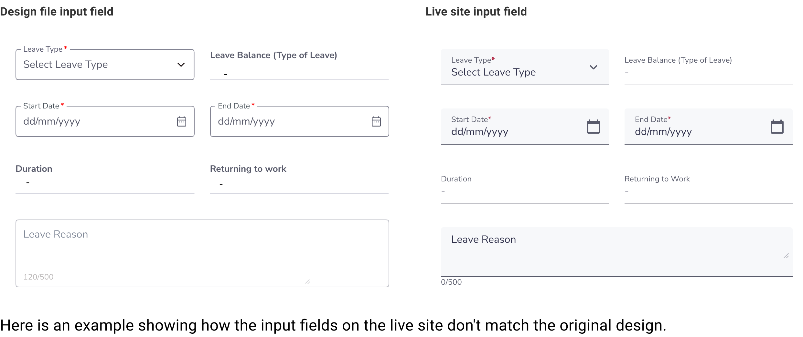
SolutionBuild a centralized Figma design system to serve as a single source of truth, aligning our design components with live production code to eliminate inconsistencies
Created road map before onboarding designers
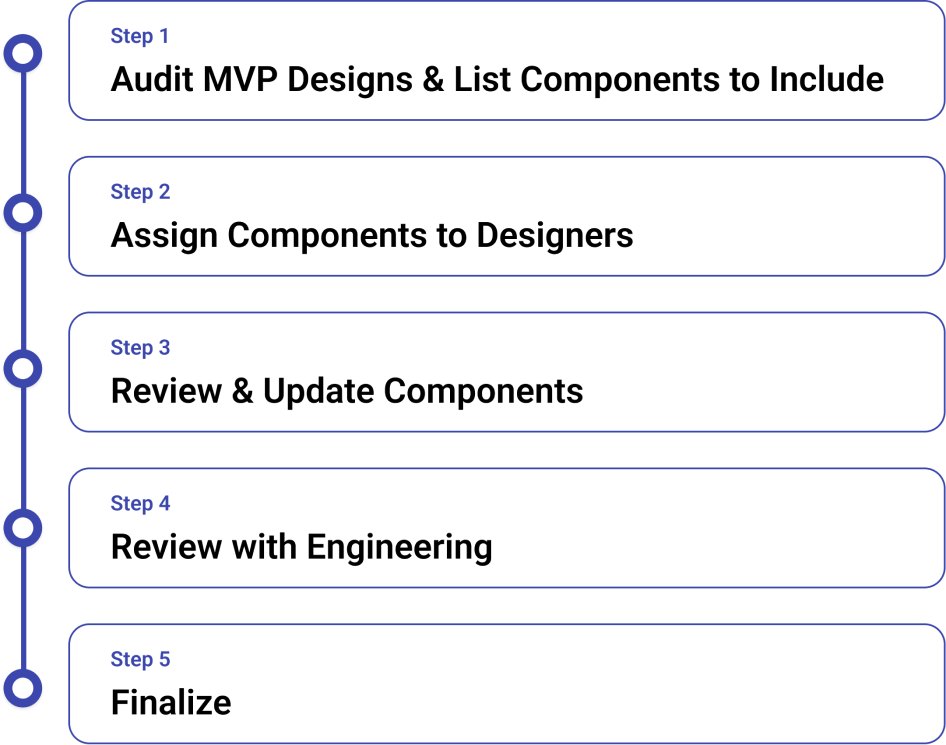
I audited the MVP design files to list necessary components for the new library. To ensure readiness for Phase 2, I limited the scope to a solid, highly achievable component set deliverable before kickoff.
Our work process included getting feedback from engineering. This allowed us to align our design system guidelines directly with developer constraints and technical requirements before finalizing the version.
The goal was to finish before the Phase 2 kickoff so we would have solid components to start designing with for Phase 2
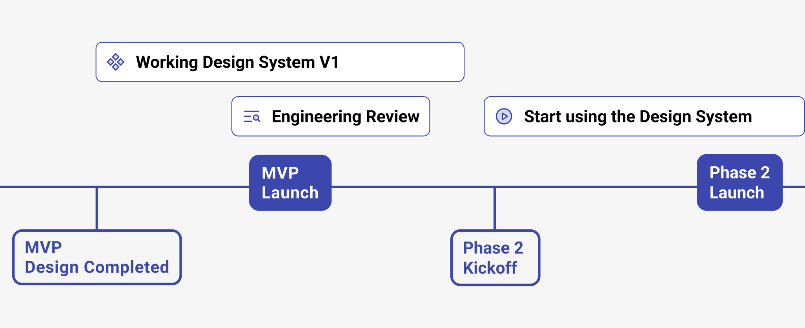
The structure is based on the Atomic Design model, which assembles small, reusable components into a scalable system
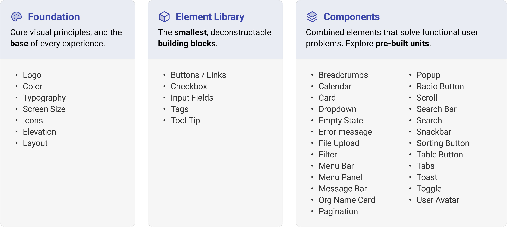
Our typography system relies on two brand typefaces: Air India Sans for headings and Nunito Sans for body copy and general text
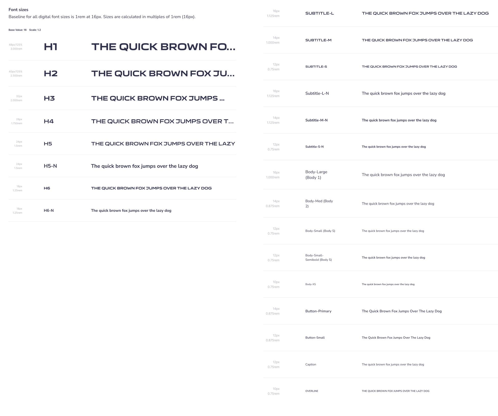
We map core brand colors to a functional semantic color system to assign a clear meaning and purpose to every token
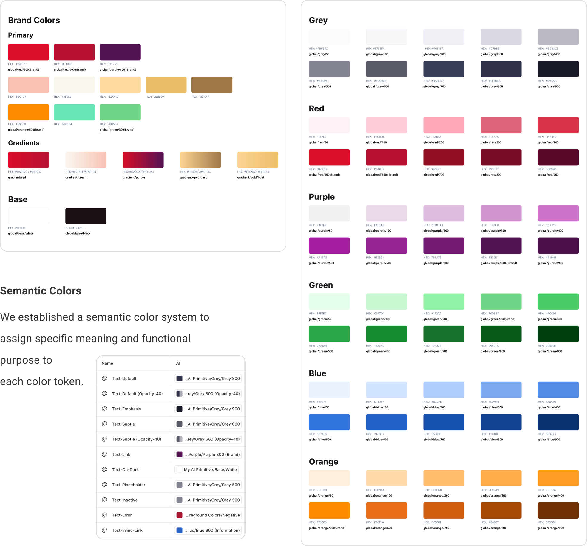
Perceived depth or layering of elements within the design
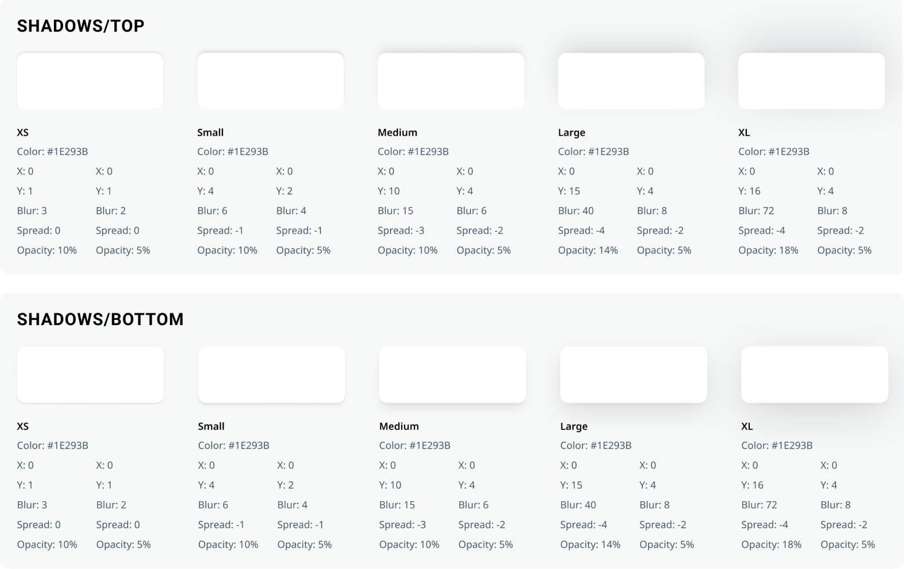
Built over 25 core components with multiple variants and properties to maximize layout flexibility while maintaining strict guardrails
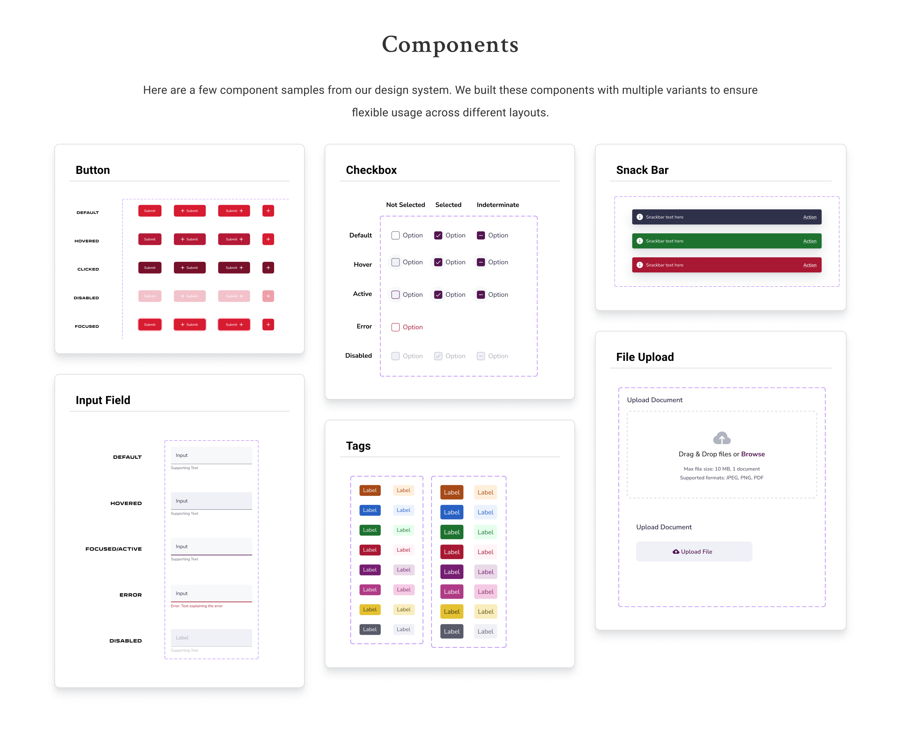
Components are built with custom properties, allowing designers to easily tweak and customize specific instances from the design panel
This core button component supports 215 unique layout and state variants.
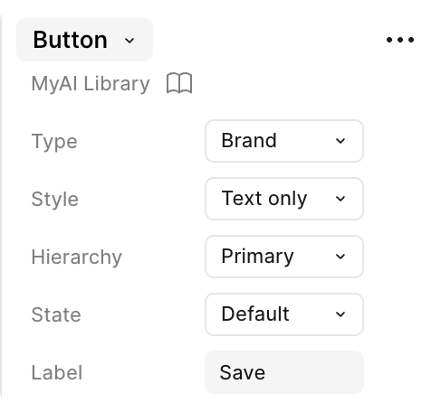
Easily toggle states, labels, and helper text parameters.
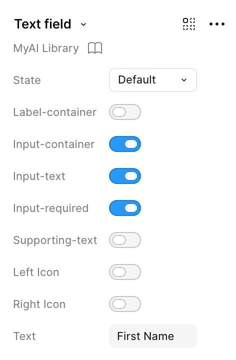
Control the state of the file upload.
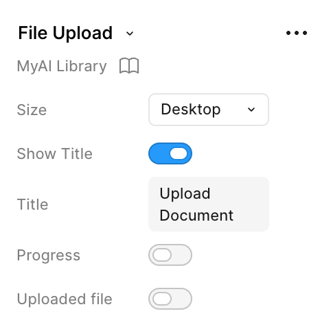
We created comprehensive guidelines to standardize layout grids, spacing rules, and component behaviors
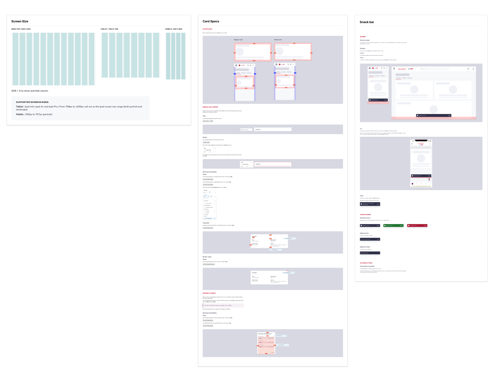
Shortly after launching the syste`m, new designers joined our team. Walking them through the design system documentation as a core part of their onboarding drastically reduced their ramp-up time, allowing them to jump straight into active project designing with total confidence.
Advanced Figma features like Auto Layout and Component Properties (Variants) were entirely new to some of our team members. To bridge this gap, we turned the library building process into a collaborative learning experience. Through peer mentorship, open feedback loops, and shared best practices, we leveled up our technical execution as a unified design team.